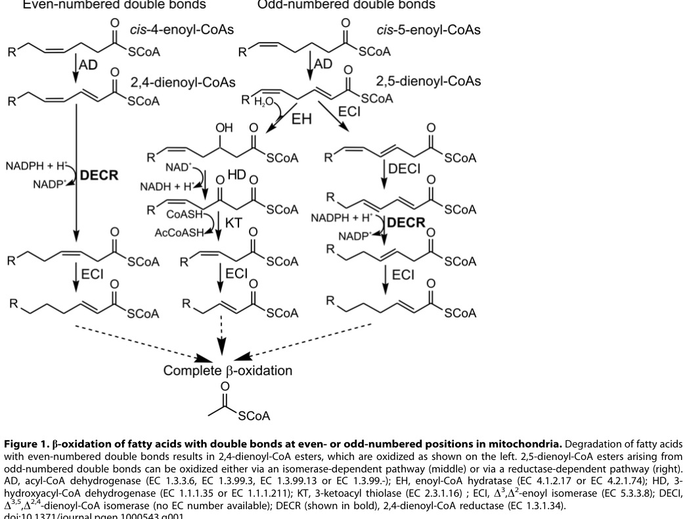

Progressive encephalopathy with leukodystrophy due to DECR deficiency (MONDO:0014464; OMIM:616034; also called 2,4-dienoyl-CoA reductase deficiency with hyperlysinemia) is an extremely rare autosomal recessive mitochondrial disorder. It is caused by biallelic loss-of-function variants in NADK2, the gene encoding mitochondrial NAD kinase. NADK2 deficiency causes a deficiency of mitochondrial NADP(H), which in turn disables NADP(H)-dependent mitochondrial enzymes — most prominently 2,4-dienoyl-CoA reductase (DECR), required for beta-oxidation of polyunsaturated fatty acids, and the lysine degradation pathway. The result is a characteristic combined biochemical signature of elevated C10:2 (decadienoyl) acylcarnitine plus hyperlysinemia, together with broader mitochondrial dysfunction. Clinically the disorder presents in the neonatal period or early infancy with hypotonia, failure to thrive, acquired microcephaly, developmental delay, leukodystrophy and other CNS malformations, intermittent lactic acidosis provoked by catabolic stress, and a progressive encephalopathy that may evolve to epilepsy, dystonia, cerebellar ataxia, cerebral visual impairment, renal tubular acidosis and spastic quadriplegia, with death in childhood in severe cases.
Ask a research question about DECR Deficiency. OpenScientist will conduct autonomous deep research using the Disorder Mechanisms Knowledge Base and PubMed literature (typically 10-30 minutes).
Do not include personal health information in your question. Questions and results are cached in your browser's local storage.
name: DECR Deficiency
creation_date: "2026-06-04T12:00:00Z"
category: Mendelian
description: >-
Progressive encephalopathy with leukodystrophy due to DECR deficiency
(MONDO:0014464; OMIM:616034; also called 2,4-dienoyl-CoA reductase deficiency
with hyperlysinemia) is an extremely rare autosomal recessive mitochondrial
disorder. It is caused by biallelic loss-of-function variants in NADK2, the
gene encoding mitochondrial NAD kinase. NADK2 deficiency causes a deficiency
of mitochondrial NADP(H), which in turn disables NADP(H)-dependent
mitochondrial enzymes — most prominently 2,4-dienoyl-CoA reductase (DECR),
required for beta-oxidation of polyunsaturated fatty acids, and the lysine
degradation pathway. The result is a characteristic combined biochemical
signature of elevated C10:2 (decadienoyl) acylcarnitine plus hyperlysinemia,
together with broader mitochondrial dysfunction. Clinically the disorder
presents in the neonatal period or early infancy with hypotonia, failure to
thrive, acquired microcephaly, developmental delay, leukodystrophy and other
CNS malformations, intermittent lactic acidosis provoked by catabolic stress,
and a progressive encephalopathy that may evolve to epilepsy, dystonia,
cerebellar ataxia, cerebral visual impairment, renal tubular acidosis and
spastic quadriplegia, with death in childhood in severe cases.
disease_term:
preferred_term: DECR Deficiency
term:
id: MONDO:0014464
label: progressive encephalopathy with leukodystrophy due to DECR deficiency
parents:
- leukodystrophy
- mitochondrial disease
- inborn error of metabolism
references:
- reference: PMID:24847004
title: "Mitochondrial NADP(H) deficiency due to a mutation in NADK2 causes dienoyl-CoA reductase deficiency with hyperlysinemia."
- reference: PMID:19578400
title: "Mitochondrial 2,4-dienoyl-CoA reductase deficiency in mice results in severe hypoglycemia with stress intolerance and unimpaired ketogenesis."
- reference: ORPHA:431361
title: "Progressive encephalopathy with leukodystrophy due to DECR deficiency"
pathophysiology:
- name: Mitochondrial NADP(H) deficiency due to NADK2 loss
description: >
Biallelic loss-of-function variants in NADK2 (mitochondrial NAD kinase)
abolish the mitochondrial NAD kinase activity required for NADP biosynthesis.
This causes a profound deficiency of mitochondrial NADP(H), the cofactor pool
that supplies reducing equivalents to multiple NADP(H)-dependent mitochondrial
oxidoreductases. NADPH acts not only as a cosubstrate but also as a molecular
chaperone that activates and stabilizes these enzymes, so its loss produces a
combined, secondary enzyme deficiency state.
cell_types:
- preferred_term: Neuron
term:
id: CL:0000540
label: neuron
biological_processes:
- preferred_term: NADP+ biosynthetic process
term:
id: GO:0006741
label: NADP+ biosynthetic process
modifier: DECREASED
cellular_components:
- preferred_term: Mitochondrion
term:
id: GO:0005739
label: mitochondrion
evidence:
- reference: PMID:24847004
reference_title: "Mitochondrial NADP(H) deficiency due to a mutation in NADK2 causes dienoyl-CoA reductase deficiency with hyperlysinemia."
supports: SUPPORT
evidence_source: HUMAN_CLINICAL
snippet: "Exome sequencing revealed a causal mutation in NADK2. NADK2 encodes the mitochondrial NAD kinase, which is crucial for NADP biosynthesis evidenced by decreased mitochondrial NADP(H) levels in patient fibroblasts."
explanation: >
Establishes that a causal NADK2 mutation produces decreased mitochondrial
NADP(H), the upstream lesion of the disease.
- reference: PMID:24847004
reference_title: "Mitochondrial NADP(H) deficiency due to a mutation in NADK2 causes dienoyl-CoA reductase deficiency with hyperlysinemia."
supports: SUPPORT
evidence_source: HUMAN_CLINICAL
snippet: "Thus NADPH is not only crucial as a cosubstrate, but can also act as a molecular chaperone that activates and stabilizes enzymes."
explanation: >
Explains the mechanism by which mitochondrial NADP(H) deficiency disables
multiple downstream NADP(H)-dependent enzymes.
downstream:
- target: Impaired DECR-mediated polyunsaturated fatty acid beta-oxidation
causal_link_type: DIRECT
description: >
Loss of mitochondrial NADP(H) deprives DECR of its required cofactor,
causing secondary DECR deficiency.
- target: Impaired lysine degradation causing hyperlysinemia
causal_link_type: DIRECT
description: >
The NADP(H)-dependent first step of lysine degradation is impaired by loss
of mitochondrial NADP(H), causing hyperlysinemia.
- name: Impaired DECR-mediated polyunsaturated fatty acid beta-oxidation
description: >
Mitochondrial 2,4-dienoyl-CoA reductase (DECR) is an NADP(H)-dependent
auxiliary enzyme of the mitochondrial beta-oxidation system that reduces the
2,4-dienoyl-CoA intermediates generated during oxidation of polyunsaturated
fatty acids. With mitochondrial NADP(H) depleted, DECR activity is deficient
(residual fibroblast activity ~10%), beta-oxidation of unsaturated fatty acids
stalls at the dienoyl-CoA step, and PUFA-derived intermediates accumulate and
appear in blood as the diagnostic C10:2 (decadienoyl) acylcarnitine. This
impairs energy production from fatty acids under catabolic stress.
cell_types:
- preferred_term: Hepatocyte
term:
id: CL:0000182
label: hepatocyte
biological_processes:
- preferred_term: Fatty acid beta-oxidation
term:
id: GO:0006635
label: fatty acid beta-oxidation
modifier: DECREASED
- preferred_term: Unsaturated fatty acid metabolic process
term:
id: GO:0033559
label: unsaturated fatty acid metabolic process
modifier: DECREASED
evidence:
- reference: PMID:24847004
reference_title: "Mitochondrial NADP(H) deficiency due to a mutation in NADK2 causes dienoyl-CoA reductase deficiency with hyperlysinemia."
supports: SUPPORT
evidence_source: HUMAN_CLINICAL
snippet: "DECR activity was also deficient in lysates of patient fibroblasts and could only be rescued by transfecting patient cells with functional NADK2."
explanation: >
Demonstrates that DECR enzyme activity is deficient secondary to NADK2 loss
and is restored by functional NADK2, confirming the causal chain.
- reference: PMID:19578400
reference_title: "Mitochondrial 2,4-dienoyl-CoA reductase deficiency in mice results in severe hypoglycemia with stress intolerance and unimpaired ketogenesis."
supports: SUPPORT
evidence_source: MODEL_ORGANISM
snippet: "In Decr(-/-) mice, the mitochondrial beta-oxidation of unsaturated fatty acids with double bonds is expected to halt at the level of trans-2, cis/trans-4-dienoyl-CoA intermediates."
explanation: >
The Decr knockout mouse confirms that loss of DECR halts PUFA
beta-oxidation at the dienoyl-CoA step.
- reference: PMID:19578400
reference_title: "Mitochondrial 2,4-dienoyl-CoA reductase deficiency in mice results in severe hypoglycemia with stress intolerance and unimpaired ketogenesis."
supports: SUPPORT
evidence_source: MODEL_ORGANISM
snippet: "fasted Decr(-/-) mice displayed increased serum acylcarnitines, especially decadienoylcarnitine, a product of the incomplete oxidation of linoleic acid (C(18:2))"
explanation: >
Identifies decadienoylcarnitine (C10:2) as the biomarker of incomplete PUFA
oxidation arising from DECR deficiency.
downstream:
- target: Energy deficit and progressive neurodegeneration
causal_link_type: INDIRECT_KNOWN_INTERMEDIATES
description: >
Impaired fatty acid energy production contributes to the cumulative energy
deficit driving neurodegeneration.
- name: Impaired lysine degradation causing hyperlysinemia
description: >
The first step of mitochondrial lysine degradation is catalyzed by the
bifunctional aminoadipic semialdehyde synthase (AASS), whose lysine-ketoglutarate
reductase activity is NADP(H)-dependent. With mitochondrial NADP(H) deficient,
lysine catabolism is impaired in vivo, producing hyperlysinemia. The
co-occurrence of elevated C10:2 acylcarnitine and hyperlysinemia is the
distinctive combined biochemical signature of NADK2-related DECR deficiency.
biological_processes:
- preferred_term: L-lysine catabolic process
term:
id: GO:0019477
label: L-lysine catabolic process
modifier: DECREASED
evidence:
- reference: PMID:24847004
reference_title: "Mitochondrial NADP(H) deficiency due to a mutation in NADK2 causes dienoyl-CoA reductase deficiency with hyperlysinemia."
supports: SUPPORT
evidence_source: HUMAN_CLINICAL
snippet: "DECR and also the first step in lysine degradation are performed by NADP-dependent oxidoreductases explaining their in vivo deficiency."
explanation: >
Establishes that the first step of lysine degradation is NADP-dependent and
therefore impaired by mitochondrial NADP(H) deficiency, causing
hyperlysinemia.
downstream:
- target: Energy deficit and progressive neurodegeneration
causal_link_type: INDIRECT_KNOWN_INTERMEDIATES
description: >
Disrupted amino acid metabolism contributes to the broader metabolic and
energetic dysfunction.
- name: Energy deficit and progressive neurodegeneration
description: >
Beyond PUFA oxidation and lysine degradation, mitochondrial NADP(H) supports
numerous other mitochondrial processes. NADK2-deficient patient fibroblasts
show decreased oxygen consumption and increased extracellular acidification,
consistent with a broad bioenergetic defect that meets clinical criteria for a
mitochondrial disorder. The cumulative energy deficit and redox imbalance
underlie the progressive encephalopathy, leukodystrophy, intermittent lactic
acidosis, and multisystem decline (including renal tubular involvement).
cell_types:
- preferred_term: Oligodendrocyte
term:
id: CL:0000128
label: oligodendrocyte
- preferred_term: Neuron
term:
id: CL:0000540
label: neuron
- preferred_term: Kidney epithelial cell
term:
id: CL:0002518
label: kidney epithelial cell
locations:
- preferred_term: Nervous system
term:
id: UBERON:0001016
label: nervous system
- preferred_term: Liver
term:
id: UBERON:0002107
label: liver
- preferred_term: Kidney
term:
id: UBERON:0002113
label: kidney
evidence:
- reference: PMID:24847004
reference_title: "Mitochondrial NADP(H) deficiency due to a mutation in NADK2 causes dienoyl-CoA reductase deficiency with hyperlysinemia."
supports: SUPPORT
evidence_source: IN_VITRO
snippet: "We found decreased oxygen consumption and increased extracellular acidification in patient fibroblasts, which may explain why the disease course is consistent with clinical criteria for a mitochondrial disorder."
explanation: >
Bioenergetic measurements in patient fibroblasts support a broad
mitochondrial dysfunction driving the progressive encephalopathy.
phenotypes:
- category: Phenotypic
name: Progressive encephalopathy
description: >
Severe, progressive encephalopathy suggestive of a mitochondrial disorder,
a defining clinical feature of the disease.
phenotype_term:
preferred_term: Progressive encephalopathy
term:
id: HP:0002448
label: Progressive encephalopathy
clinical_course: PROGRESSIVE
frequency: FREQUENT
evidence:
- reference: PMID:24847004
reference_title: "Mitochondrial NADP(H) deficiency due to a mutation in NADK2 causes dienoyl-CoA reductase deficiency with hyperlysinemia."
supports: SUPPORT
evidence_source: HUMAN_CLINICAL
snippet: "We describe a new case with failure to thrive, developmental delay, lactic acidosis and severe encephalopathy suggestive of a mitochondrial disorder."
explanation: Severe encephalopathy is reported in the index NADK2 case.
- reference: ORPHA:431361
reference_title: "Progressive encephalopathy with leukodystrophy due to DECR deficiency"
supports: SUPPORT
snippet: "HP:0002448 | Progressive encephalopathy | Frequent (79-30%)"
explanation: Orphanet annotates progressive encephalopathy as a frequent feature.
- category: Phenotypic
name: Leukodystrophy
description: >
White matter disease / leukodystrophy is part of the disease name and
progressive CNS pathology.
phenotype_term:
preferred_term: Leukodystrophy
term:
id: HP:0002415
label: Leukodystrophy
frequency: FREQUENT
evidence:
- reference: ORPHA:431361
reference_title: "Progressive encephalopathy with leukodystrophy due to DECR deficiency"
supports: SUPPORT
snippet: "HP:0002415 | Leukodystrophy | Frequent (79-30%)"
explanation: Orphanet annotates leukodystrophy as a frequent feature of this disease.
- category: Phenotypic
name: Neonatal hypotonia
description: Neonatal hypotonia is a presenting feature.
phenotype_term:
preferred_term: Neonatal hypotonia
term:
id: HP:0001319
label: Neonatal hypotonia
frequency: FREQUENT
evidence:
- reference: ORPHA:431361
reference_title: "Progressive encephalopathy with leukodystrophy due to DECR deficiency"
supports: SUPPORT
snippet: "HP:0001319 | Neonatal hypotonia | Frequent (79-30%)"
explanation: Orphanet annotates neonatal hypotonia as a frequent feature.
- category: Phenotypic
name: Failure to thrive
description: Failure to thrive is a presenting feature.
phenotype_term:
preferred_term: Failure to thrive
term:
id: HP:0001508
label: Failure to thrive
frequency: FREQUENT
evidence:
- reference: PMID:24847004
reference_title: "Mitochondrial NADP(H) deficiency due to a mutation in NADK2 causes dienoyl-CoA reductase deficiency with hyperlysinemia."
supports: SUPPORT
evidence_source: HUMAN_CLINICAL
snippet: "We describe a new case with failure to thrive, developmental delay, lactic acidosis and severe encephalopathy"
explanation: Failure to thrive reported in the index NADK2 case.
- reference: ORPHA:431361
reference_title: "Progressive encephalopathy with leukodystrophy due to DECR deficiency"
supports: SUPPORT
snippet: "HP:0001508 | Failure to thrive | Frequent (79-30%)"
explanation: Orphanet annotates failure to thrive as a frequent feature.
- category: Phenotypic
name: Developmental delay
description: Global developmental delay is a presenting feature.
phenotype_term:
preferred_term: Global developmental delay
term:
id: HP:0001263
label: Global developmental delay
frequency: FREQUENT
evidence:
- reference: PMID:24847004
reference_title: "Mitochondrial NADP(H) deficiency due to a mutation in NADK2 causes dienoyl-CoA reductase deficiency with hyperlysinemia."
supports: SUPPORT
evidence_source: HUMAN_CLINICAL
snippet: "We describe a new case with failure to thrive, developmental delay, lactic acidosis and severe encephalopathy"
explanation: Developmental delay reported in the index NADK2 case.
- reference: ORPHA:431361
reference_title: "Progressive encephalopathy with leukodystrophy due to DECR deficiency"
supports: SUPPORT
snippet: "HP:0001263 | Global developmental delay | Frequent (79-30%)"
explanation: Orphanet annotates global developmental delay as a frequent feature.
- category: Phenotypic
name: Stress-induced lactic acidosis
description: >
Intermittent lactic acidosis, often provoked by catabolic stress
(e.g., infection), reflecting mitochondrial dysfunction.
phenotype_term:
preferred_term: Stress/infection-induced lactic acidosis
term:
id: HP:0004897
label: Stress/infection-induced lactic acidosis
temporality: RECURRENT
frequency: FREQUENT
evidence:
- reference: PMID:24847004
reference_title: "Mitochondrial NADP(H) deficiency due to a mutation in NADK2 causes dienoyl-CoA reductase deficiency with hyperlysinemia."
supports: SUPPORT
evidence_source: HUMAN_CLINICAL
snippet: "We describe a new case with failure to thrive, developmental delay, lactic acidosis and severe encephalopathy"
explanation: Lactic acidosis reported in the index NADK2 case.
- reference: ORPHA:431361
reference_title: "Progressive encephalopathy with leukodystrophy due to DECR deficiency"
supports: SUPPORT
snippet: "HP:0004897 | Stress/infection-induced lactic acidosis | Frequent (79-30%)"
explanation: Orphanet annotates stress/infection-induced lactic acidosis as a frequent feature.
- category: Phenotypic
name: Microcephaly
description: Acquired microcephaly develops over the disease course.
phenotype_term:
preferred_term: Microcephaly
term:
id: HP:0000252
label: Microcephaly
frequency: FREQUENT
evidence:
- reference: ORPHA:431361
reference_title: "Progressive encephalopathy with leukodystrophy due to DECR deficiency"
supports: SUPPORT
snippet: "HP:0000252 | Microcephaly | Frequent (79-30%)"
explanation: Orphanet annotates microcephaly as a frequent feature.
- category: Phenotypic
name: Seizures
description: Epilepsy/seizures develop later in the disease course.
phenotype_term:
preferred_term: Seizure
term:
id: HP:0001250
label: Seizure
frequency: FREQUENT
evidence:
- reference: ORPHA:431361
reference_title: "Progressive encephalopathy with leukodystrophy due to DECR deficiency"
supports: SUPPORT
snippet: "HP:0001250 | Seizure | Frequent (79-30%)"
explanation: Orphanet annotates seizures as a frequent feature.
- category: Phenotypic
name: Dystonia
description: Dystonia is among the later neurological complications.
phenotype_term:
preferred_term: Dystonia
term:
id: HP:0001332
label: Dystonia
frequency: FREQUENT
evidence:
- reference: ORPHA:431361
reference_title: "Progressive encephalopathy with leukodystrophy due to DECR deficiency"
supports: SUPPORT
snippet: "HP:0001332 | Dystonia | Frequent (79-30%)"
explanation: Orphanet annotates dystonia as a frequent feature.
- category: Phenotypic
name: Cerebellar atrophy
description: Cerebellar atrophy is among the CNS abnormalities.
phenotype_term:
preferred_term: Cerebellar atrophy
term:
id: HP:0001272
label: Cerebellar atrophy
frequency: FREQUENT
evidence:
- reference: ORPHA:431361
reference_title: "Progressive encephalopathy with leukodystrophy due to DECR deficiency"
supports: SUPPORT
snippet: "HP:0001272 | Cerebellar atrophy | Frequent (79-30%)"
explanation: Orphanet annotates cerebellar atrophy as a frequent feature.
- category: Phenotypic
name: Spastic quadriplegia
description: Progressive spastic quadriplegia is among the severe later complications.
phenotype_term:
preferred_term: Progressive spastic quadriplegia
term:
id: HP:0002478
label: Progressive spastic quadriplegia
clinical_course: PROGRESSIVE
frequency: FREQUENT
evidence:
- reference: ORPHA:431361
reference_title: "Progressive encephalopathy with leukodystrophy due to DECR deficiency"
supports: SUPPORT
snippet: "HP:0002478 | Progressive spastic quadriplegia | Frequent (79-30%)"
explanation: Orphanet annotates progressive spastic quadriplegia as a frequent feature.
- category: Phenotypic
name: Renal tubular acidosis
description: Renal tubular acidosis reflects multisystem mitochondrial involvement.
phenotype_term:
preferred_term: Renal tubular acidosis
term:
id: HP:0001947
label: Renal tubular acidosis
frequency: FREQUENT
evidence:
- reference: ORPHA:431361
reference_title: "Progressive encephalopathy with leukodystrophy due to DECR deficiency"
supports: SUPPORT
snippet: "HP:0001947 | Renal tubular acidosis | Frequent (79-30%)"
explanation: Orphanet annotates renal tubular acidosis as a frequent feature.
- category: Phenotypic
name: Ventriculomegaly
description: Ventriculomegaly is among the central nervous system abnormalities.
phenotype_term:
preferred_term: Ventriculomegaly
term:
id: HP:0002119
label: Ventriculomegaly
frequency: FREQUENT
evidence:
- reference: ORPHA:431361
reference_title: "Progressive encephalopathy with leukodystrophy due to DECR deficiency"
supports: SUPPORT
snippet: "HP:0002119 | Ventriculomegaly | Frequent (79-30%)"
explanation: Orphanet annotates ventriculomegaly as a frequent feature.
- category: Phenotypic
name: Corpus callosum hypoplasia
description: Hypoplasia of the corpus callosum is among the CNS abnormalities.
phenotype_term:
preferred_term: Hypoplasia of the corpus callosum
term:
id: HP:0002079
label: Hypoplasia of the corpus callosum
frequency: FREQUENT
evidence:
- reference: ORPHA:431361
reference_title: "Progressive encephalopathy with leukodystrophy due to DECR deficiency"
supports: SUPPORT
snippet: "HP:0002079 | Hypoplasia of the corpus callosum | Frequent (79-30%)"
explanation: Orphanet annotates corpus callosum hypoplasia as a frequent feature.
- category: Phenotypic
name: Cerebellar ataxia
description: Cerebellar ataxia develops later in the disease course.
phenotype_term:
preferred_term: Progressive cerebellar ataxia
term:
id: HP:0002073
label: Progressive cerebellar ataxia
frequency: FREQUENT
evidence:
- reference: ORPHA:431361
reference_title: "Progressive encephalopathy with leukodystrophy due to DECR deficiency"
supports: SUPPORT
snippet: "HP:0002470 | Nonprogressive cerebellar ataxia | Frequent (79-30%)"
explanation: >
Orphanet annotates cerebellar ataxia (HP:0002470, Nonprogressive cerebellar
ataxia) as a frequent feature. Because this disease has a progressive course,
mapped here to HP:0002073 (Progressive cerebellar ataxia) rather than the
Orphanet nonprogressive term.
- category: Phenotypic
name: Cerebral visual impairment
description: Cortical/cerebral visual impairment occurs in severe cases.
phenotype_term:
preferred_term: Cerebral visual impairment
term:
id: HP:0100704
label: Cerebral visual impairment
frequency: FREQUENT
evidence:
- reference: ORPHA:431361
reference_title: "Progressive encephalopathy with leukodystrophy due to DECR deficiency"
supports: SUPPORT
snippet: "HP:0100704 | Cerebral visual impairment | Frequent (79-30%)"
explanation: Orphanet annotates cerebral visual impairment as a frequent feature.
- category: Phenotypic
name: Nystagmus
description: Involuntary oscillatory eye movements, a neurological sign in this leukodystrophy.
phenotype_term:
preferred_term: Nystagmus
term:
id: HP:0000639
label: Nystagmus
frequency: FREQUENT
evidence:
- reference: ORPHA:431361
reference_title: "Progressive encephalopathy with leukodystrophy due to DECR deficiency"
supports: SUPPORT
snippet: "HP:0000639 | Nystagmus | Frequent (79-30%)"
explanation: Orphanet annotates nystagmus as a frequent feature.
- category: Phenotypic
name: Choreoathetosis
description: >
A movement disorder combining chorea and athetosis, distinct from the dystonia
also seen in this disease.
phenotype_term:
preferred_term: Choreoathetosis
term:
id: HP:0001266
label: Choreoathetosis
frequency: FREQUENT
evidence:
- reference: ORPHA:431361
reference_title: "Progressive encephalopathy with leukodystrophy due to DECR deficiency"
supports: SUPPORT
snippet: "HP:0001266 | Choreoathetosis | Frequent (79-30%)"
explanation: Orphanet annotates choreoathetosis as a frequent feature.
- category: Phenotypic
name: Abnormal basal ganglia MRI signal intensity
description: >
Neuroimaging shows abnormal signal in the basal ganglia, reflecting the CNS
pathology of this neurodegenerative disorder.
phenotype_term:
preferred_term: Abnormal basal ganglia MRI signal intensity
term:
id: HP:0012751
label: Abnormal basal ganglia MRI signal intensity
frequency: FREQUENT
evidence:
- reference: ORPHA:431361
reference_title: "Progressive encephalopathy with leukodystrophy due to DECR deficiency"
supports: SUPPORT
snippet: "HP:0012751 | Abnormal basal ganglia MRI signal intensity | Frequent (79-30%)"
explanation: Orphanet annotates abnormal basal ganglia MRI signal intensity as a frequent feature.
- category: Laboratory
name: Hyperlysinemia
description: >
Elevated plasma lysine resulting from NADP(H)-dependent impairment of the
first step of lysine degradation; a hallmark of the NADK2-related phenotype.
phenotype_term:
preferred_term: Hyperlysinemia
term:
id: HP:0002161
label: Hyperlysinemia
frequency: FREQUENT
evidence:
- reference: PMID:24847004
reference_title: "Mitochondrial NADP(H) deficiency due to a mutation in NADK2 causes dienoyl-CoA reductase deficiency with hyperlysinemia."
supports: SUPPORT
evidence_source: HUMAN_CLINICAL
snippet: "Dienoyl-CoA reductase (DECR) deficiency with hyperlysinemia is a rare disorder affecting the metabolism of polyunsaturated fatty acids and lysine."
explanation: Hyperlysinemia is part of the defining biochemical phenotype.
- reference: ORPHA:431361
reference_title: "Progressive encephalopathy with leukodystrophy due to DECR deficiency"
supports: SUPPORT
snippet: "HP:0002161 | Hyperlysinemia | Frequent (79-30%)"
explanation: Orphanet annotates hyperlysinemia as a frequent feature.
- category: Laboratory
name: Decreased circulating carnitine concentration
description: >
Low free/total carnitine, a common secondary finding in fatty acid oxidation
disorders including DECR deficiency.
phenotype_term:
preferred_term: Decreased circulating carnitine concentration
term:
id: HP:0003234
label: Decreased circulating carnitine concentration
frequency: FREQUENT
evidence:
- reference: ORPHA:431361
reference_title: "Progressive encephalopathy with leukodystrophy due to DECR deficiency"
supports: SUPPORT
snippet: "HP:0003234 | Decreased circulating carnitine concentration | Frequent (79-30%)"
explanation: Orphanet annotates decreased circulating carnitine as a frequent feature.
- category: Laboratory
name: Organic aciduria
description: >
Urinary excretion of non-amino organic acids, including unsaturated
dicarboxylic acids reflecting the impaired polyunsaturated fatty acid
beta-oxidation in DECR deficiency.
phenotype_term:
preferred_term: Organic aciduria
term:
id: HP:0001992
label: Organic aciduria
frequency: FREQUENT
evidence:
- reference: ORPHA:431361
reference_title: "Progressive encephalopathy with leukodystrophy due to DECR deficiency"
supports: SUPPORT
snippet: "HP:0001992 | Organic aciduria | Frequent (79-30%)"
explanation: Orphanet annotates organic aciduria as a frequent feature.
genetic:
- name: NADK2 variants
notes: >
Biallelic loss-of-function variants in NADK2 (mitochondrial NAD kinase) cause
the disease. A homozygous nonsense variant was identified by exome sequencing
in the index case; rescue of the DECR defect by transfection of functional
NADK2 confirmed causality.
gene_term:
preferred_term: NADK2
term:
id: hgnc:26404
label: NADK2
relationship_type: CAUSATIVE
variant_origin: GERMLINE
inheritance:
- name: Autosomal recessive
inheritance_term:
preferred_term: Autosomal recessive inheritance
term:
id: HP:0000007
label: Autosomal recessive inheritance
evidence:
- reference: PMID:24847004
reference_title: "Mitochondrial NADP(H) deficiency due to a mutation in NADK2 causes dienoyl-CoA reductase deficiency with hyperlysinemia."
supports: SUPPORT
evidence_source: HUMAN_CLINICAL
snippet: "We conclude that DECR deficiency with hyperlysinemia is caused by mitochondrial NADP(H) deficiency due to a mutation in NADK2."
explanation: >
NADK2 is established as the causal gene; the disorder is autosomal
recessive with a homozygous variant in the proband.
- reference: ORPHA:431361
reference_title: "Progressive encephalopathy with leukodystrophy due to DECR deficiency"
supports: SUPPORT
snippet: "Autosomal recessive"
explanation: Orphanet reports autosomal recessive inheritance.
evidence:
- reference: PMID:24847004
reference_title: "Mitochondrial NADP(H) deficiency due to a mutation in NADK2 causes dienoyl-CoA reductase deficiency with hyperlysinemia."
supports: SUPPORT
evidence_source: HUMAN_CLINICAL
snippet: "Exome sequencing revealed a causal mutation in NADK2."
explanation: Exome sequencing identified NADK2 as the causal gene.
- reference: ORPHA:431361
reference_title: "Progressive encephalopathy with leukodystrophy due to DECR deficiency"
supports: SUPPORT
snippet: "NADK2 | NAD kinase 2, mitochondrial | hgnc:26404 | Disease-causing germline mutation(s) (loss of function) in"
explanation: >
Orphanet attributes the disease to loss-of-function germline mutations in
NADK2.
biochemical:
- name: Elevated C10:2 (decadienoyl) acylcarnitine
notes: >
Elevation of the C10:2 (decadienoyl) acylcarnitine is the signature analyte of
impaired polyunsaturated fatty acid beta-oxidation in DECR deficiency, derived
from incomplete oxidation of linoleic acid (C18:2). It is detectable on the
plasma acylcarnitine profile and has been used as a newborn-screening marker,
though it is neither fully sensitive nor specific.
biomarker_term:
preferred_term: O-acylcarnitine
term:
id: CHEBI:17387
label: O-acylcarnitine
presence: INCREASED
evidence:
- reference: PMID:19578400
reference_title: "Mitochondrial 2,4-dienoyl-CoA reductase deficiency in mice results in severe hypoglycemia with stress intolerance and unimpaired ketogenesis."
supports: SUPPORT
evidence_source: MODEL_ORGANISM
snippet: "fasted Decr(-/-) mice displayed increased serum acylcarnitines, especially decadienoylcarnitine, a product of the incomplete oxidation of linoleic acid (C(18:2))"
explanation: >
Decadienoylcarnitine (C10:2) accumulates as a product of incomplete PUFA
oxidation when DECR is deficient.
- name: Hyperlysinemia
notes: Elevated plasma/CSF/urine lysine due to impaired lysine degradation.
biomarker_term:
preferred_term: L-lysine
term:
id: CHEBI:18019
label: L-lysine
presence: INCREASED
evidence:
- reference: PMID:24847004
reference_title: "Mitochondrial NADP(H) deficiency due to a mutation in NADK2 causes dienoyl-CoA reductase deficiency with hyperlysinemia."
supports: SUPPORT
evidence_source: HUMAN_CLINICAL
snippet: "DECR and also the first step in lysine degradation are performed by NADP-dependent oxidoreductases explaining their in vivo deficiency."
explanation: >
The NADP(H)-dependent first step of lysine degradation is impaired, raising
lysine levels.
- name: Elevated lactate
notes: Elevated blood/CSF lactate reflecting mitochondrial dysfunction.
biomarker_term:
preferred_term: lactate
term:
id: CHEBI:24996
label: lactate
presence: INCREASED
evidence:
- reference: PMID:24847004
reference_title: "Mitochondrial NADP(H) deficiency due to a mutation in NADK2 causes dienoyl-CoA reductase deficiency with hyperlysinemia."
supports: SUPPORT
evidence_source: HUMAN_CLINICAL
snippet: "We describe a new case with failure to thrive, developmental delay, lactic acidosis and severe encephalopathy"
explanation: Lactic acidosis indicates elevated lactate.
treatments:
- name: Dietary management and metabolic support
description: >
Management is supportive and metabolic. Reported attempts in the literature
include dietary lysine restriction, caloric/nutritional support to limit
catabolism, and avoidance of fasting and catabolic stress. These are
management attempts rather than established disease-modifying therapy.
treatment_term:
preferred_term: dietary intervention
term:
id: MAXO:0000088
label: dietary intervention
evidence:
- reference: PMID:24847004
reference_title: "Mitochondrial NADP(H) deficiency due to a mutation in NADK2 causes dienoyl-CoA reductase deficiency with hyperlysinemia."
supports: PARTIAL
evidence_source: HUMAN_CLINICAL
snippet: "Dienoyl-CoA reductase (DECR) deficiency with hyperlysinemia is a rare disorder affecting the metabolism of polyunsaturated fatty acids and lysine."
explanation: >
The disorder affecting lysine and PUFA metabolism provides the rationale for
dietary lysine restriction and avoidance of catabolic stress; no proven
disease-modifying therapy is established.
- name: Supportive care
description: >
Multidisciplinary supportive care for the progressive neurometabolic disease,
including management of seizures, feeding, and intercurrent metabolic
decompensation during illness.
treatment_term:
preferred_term: supportive care
term:
id: MAXO:0000950
label: supportive care
evidence:
- reference: PMID:24847004
reference_title: "Mitochondrial NADP(H) deficiency due to a mutation in NADK2 causes dienoyl-CoA reductase deficiency with hyperlysinemia."
supports: PARTIAL
evidence_source: HUMAN_CLINICAL
snippet: "the disease course is consistent with clinical criteria for a mitochondrial disorder"
explanation: >
The mitochondrial, multisystem, progressive nature of the disease justifies
supportive, symptom-directed care.
- name: Genetic counseling
description: >
Given autosomal recessive inheritance, genetic counseling and carrier/cascade
testing are the most actionable preventive strategies once a familial NADK2
variant is known.
treatment_term:
preferred_term: genetic counseling
term:
id: MAXO:0000079
label: genetic counseling
evidence:
- reference: PMID:24847004
reference_title: "Mitochondrial NADP(H) deficiency due to a mutation in NADK2 causes dienoyl-CoA reductase deficiency with hyperlysinemia."
supports: PARTIAL
evidence_source: HUMAN_CLINICAL
snippet: "We conclude that DECR deficiency with hyperlysinemia is caused by mitochondrial NADP(H) deficiency due to a mutation in NADK2."
explanation: >
Identification of NADK2 as the causal gene enables genetic counseling and
carrier testing for autosomal recessive disease.
datasets: []
“Mitochondrial 2,4‑dienoyl‑CoA reductase (DECR) deficiency” is an extremely rare inborn error of metabolism classically defined biochemically by impaired oxidation of polyunsaturated fatty acids (PUFAs) with accumulation of the acylcarnitine C10:2 (decadienoylcarnitine) and low DECR enzymatic activity. In the best-characterized modern molecular cases, the apparent DECR defect was secondary to autosomal recessive NADK2 deficiency, which causes mitochondrial NADP(H) deficiency and thereby disables NADPH-dependent mitochondrial enzymes including DECR and AASS (lysine pathway), producing a combined signature of C10:2 elevation + hyperlysinemia and severe neurometabolic disease. (houten2014mitochondrialnadp(h)deficiency pages 9-10, houten2014mitochondrialnadp(h)deficiency pages 5-7, houten2014mitochondrialnadp(h)deficiency pages 1-2)
A primary, Mendelian DECR1 (DECR)-mutant human disorder is suggested by historical biochemistry-first reports and by strong mouse genetic evidence, but coding DECR1 mutations were excluded in the NADK2-related human cases described in the key Human Molecular Genetics report, leaving the extent of confirmed human DECR1‑biallelic disease incompletely resolved in the tool-accessible literature used here. (houten2014mitochondrialnadp(h)deficiency pages 4-5, houten2014mitochondrialnadp(h)deficiency pages 5-7)
DECR deficiency refers to deficient activity of mitochondrial 2,4‑dienoyl‑CoA reductase (DECR), an auxiliary enzyme required for complete mitochondrial β‑oxidation of polyunsaturated fatty acids by reducing 2,4‑dienoyl‑CoA intermediates. Loss of activity leads to accumulation of characteristic PUFA-derived intermediates (detected as C10:2 acylcarnitine) and clinical decompensation under metabolic stress. (miinalainen2009mitochondrial24dienoylcoareductase pages 1-2)
Within the tool-accessible corpus for this run, I could not reliably retrieve OMIM/Orphanet/MONDO identifiers for “DECR deficiency/DECR1 deficiency.” Accordingly, identifier mapping should be validated directly in OMIM/Orphanet/MONDO during knowledge-base curation.
Evidence is derived from: * Individual patient reports/series with deep biochemical phenotyping and genetics (notably NADK2-associated cases). (houten2014mitochondrialnadp(h)deficiency pages 4-5, houten2014mitochondrialnadp(h)deficiency pages 5-7, houten2014mitochondrialnadp(h)deficiency pages 1-2) * Aggregated biochemical screening considerations (newborn screening marker interpretation) discussed within primary case literature. (houten2014mitochondrialnadp(h)deficiency pages 10-12) * A mechanistic Decr knockout mouse model that supports pathway understanding and biomarker interpretation. (miinalainen2009mitochondrial24dienoylcoareductase pages 1-2)
1) Secondary DECR deficiency due to NADK2 deficiency (autosomal recessive) * A homozygous nonsense NADK2 variant (reported as c.1018C>T; p.R340X) caused mitochondrial NADP(H) deficiency, which in turn impaired NADPH-dependent mitochondrial enzymes including DECR and AASS (lysine pathway), explaining C10:2 elevation plus hyperlysinemia. (houten2014mitochondrialnadp(h)deficiency pages 5-7) * In this context, the DECR biochemical phenotype is downstream of NADK2 and reflects combined mitochondrial redox cofactor deficiency rather than a structural DECR1 defect. (houten2014mitochondrialnadp(h)deficiency pages 9-10, houten2014mitochondrialnadp(h)deficiency pages 10-12)
2) Primary DECR deficiency (putative DECR1-related) * Historical biochemical cases of “DECR deficiency” predate current sequencing and reported low enzyme activity in tissues. (houten2014mitochondrialnadp(h)deficiency pages 2-4) * A Decr knockout mouse strongly supports that loss of mitochondrial DECR activity is sufficient to cause the characteristic C10:2 biomarker and stress-intolerance phenotype. (miinalainen2009mitochondrial24dienoylcoareductase pages 1-2) * However, in the best-characterized modern human cases in the available evidence, targeted sequencing excluded DECR1 coding mutations. (houten2014mitochondrialnadp(h)deficiency pages 4-5, houten2014mitochondrialnadp(h)deficiency pages 5-7)
No DECR- or NADK2-specific protective factors were identified in the available evidence.
Clinical presentation can be severe, early-onset, and progressive: * Failure to thrive (HP:0001508), microcephaly (HP:0000252), hypotonia (HP:0001252) (houten2014mitochondrialnadp(h)deficiency pages 2-4) * Developmental delay (HP:0001263) and progressive neurologic decline (houten2014mitochondrialnadp(h)deficiency pages 1-2) * Movement disorder including choreoathetosis/dystonia (HP:0001266/HP:0001332) (houten2014mitochondrialnadp(h)deficiency pages 4-5) * Epilepsy (HP:0001250), cortical blindness/visual loss (HP:0000608/HP:0000505) in severe cases (houten2014mitochondrialnadp(h)deficiency pages 4-5) * Lactic acidosis (HP:0003128) and renal tubular acidosis (HP:0001947) consistent with multisystem mitochondrial dysfunction (houten2014mitochondrialnadp(h)deficiency pages 4-5) * Neuroimaging: progressive leukodystrophy / white matter disease (HP:0002415), cerebral atrophy (HP:0002059), basal ganglia lesions (HP:0002134) (houten2014mitochondrialnadp(h)deficiency pages 4-5)
Age of onset: reported as early infancy (e.g., presentation at 8 weeks) (houten2014mitochondrialnadp(h)deficiency pages 2-4).
Severity/progression: severe, progressive encephalopathy with death in childhood reported in the detailed NADK2-associated cases. (houten2014mitochondrialnadp(h)deficiency pages 4-5)
Decr−/− mice demonstrate: * Severe fasting/stress intolerance with profound hypoglycemia and “unimpaired ketogenesis” (consistent with preserved ketone production despite impaired PUFA oxidation) (miinalainen2009mitochondrial24dienoylcoareductase pages 1-2) * Hepatic steatosis (fatty liver) and accumulation of unsaturated fatty acids in hepatic lipids (miinalainen2009mitochondrial24dienoylcoareductase pages 1-2) * Cold intolerance / fatal hypothermia with impaired thermogenesis under acute cold challenge (miinalainen2009mitochondrial24dienoylcoareductase pages 1-2)
Human cases described are consistent with severe neurodevelopmental disability and progressive neurologic impairment, implying major quality-of-life impact; disease-specific QoL instruments were not identified in the accessible evidence. (houten2014mitochondrialnadp(h)deficiency pages 4-5)
Based on energy-demand and reported pathology: * Hepatocyte (CL:0000182) / liver involvement (steatosis; biochemical FAO organ) (miinalainen2009mitochondrial24dienoylcoareductase pages 1-2) * Neuron (CL:0000540) and oligodendrocyte (CL:0000128) as plausible cell types in progressive leukodystrophy/encephalopathy (houten2014mitochondrialnadp(h)deficiency pages 4-5) * Renal tubular epithelial cell (CL:0000066) (renal tubular acidosis) (houten2014mitochondrialnadp(h)deficiency pages 4-5)
No specific toxins/lifestyle infectious triggers were identified. The main non-genetic precipitants described are metabolic stressors (fasting, cold exposure) in the mouse model. (miinalainen2009mitochondrial24dienoylcoareductase pages 1-2)
Upstream trigger: Loss of DECR activity (primary Decr knockout) or loss of mitochondrial NADP(H) (NADK2 deficiency) → reduced ability to reduce 2,4‑dienoyl‑CoA intermediates during mitochondrial PUFA β‑oxidation. (houten2014mitochondrialnadp(h)deficiency pages 1-2, miinalainen2009mitochondrial24dienoylcoareductase media db369249)
Biochemical block: Incomplete PUFA β‑oxidation → accumulation of PUFA-derived intermediates that appear in blood as C10:2 (decadienoyl)carnitine; mouse fasting acylcarnitine profiles show marked C10:2 accumulation in Decr−/− mice. (miinalainen2009mitochondrial24dienoylcoareductase pages 1-2, miinalainen2009mitochondrial24dienoylcoareductase media f7dcc2b0)
Downstream metabolic effects: Energy stress response impairment under fasting/cold challenge → severe hypoglycemia and stress intolerance; liver lipid accumulation/steatosis; compensatory upregulation of peroxisomal β‑oxidation/ω‑oxidation in mice. (miinalainen2009mitochondrial24dienoylcoareductase pages 1-2)
Multisystem mitochondrial dysfunction (NADK2 cases): Mitochondrial redox cofactor deficiency also affects additional NADPH-dependent enzymes and is associated with reduced maximal oxygen consumption and increased extracellular acidification in fibroblasts, consistent with broader mitochondrial disease and severe neurodegeneration. (houten2014mitochondrialnadp(h)deficiency pages 9-10)
A translational metabolism review described the diagnostic clue as: “a very unusual C10:2 acylcarnitine… most likely derived from linoleic acid (C18:2) oxidation.” (wanders2019translationalmetabolisma pages 3-3)
Front-line biochemical screening * Acylcarnitine profile (tandem MS): elevation of C10:2 (decadienoyl)carnitine is the signature marker discussed for DECR deficiency and was retrospectively present at low levels on newborn blood spot in a NADK2 case. (houten2014mitochondrialnadp(h)deficiency pages 10-12, houten2014mitochondrialnadp(h)deficiency pages 2-4) * Plasma/CSF amino acids: hyperlysinemia can co-occur in NADK2-associated cases. (houten2014mitochondrialnadp(h)deficiency pages 4-5, houten2014mitochondrialnadp(h)deficiency pages 5-7) * Lactate: elevated in blood/CSF in severe neurometabolic presentations. (houten2014mitochondrialnadp(h)deficiency pages 4-5) * Urine organic acids: persistent abnormalities reported (e.g., lactic/pyruvic and other acids), consistent with mitochondrial dysfunction. (houten2014mitochondrialnadp(h)deficiency pages 4-5)
Functional/confirmatory testing * DECR enzyme activity assay in fibroblasts/tissues (reported residual ~10% using sorboyl‑CoA substrate). (houten2014mitochondrialnadp(h)deficiency pages 4-5) * Cellular bioenergetics (oxygen consumption / extracellular acidification) consistent with mitochondrial disorder. (houten2014mitochondrialnadp(h)deficiency pages 9-10)
In the detailed NADK2-associated report, interventions attempted included: * Dietary lysine restriction (MAXO suggestion: dietary amino acid restriction) * Caloric support (MAXO: nutritional support therapy) * Medium-chain fatty acids (often used in FAO disorders to bypass some β‑oxidation steps) * Carnitine supplementation These are described as management attempts rather than established effective therapy. (houten2014mitochondrialnadp(h)deficiency pages 4-5)
No DECR/NADK2-specific interventional clinical trials were identified in this run’s clinical trial retrieval.
No naturally occurring veterinary DECR deficiency evidence was identified in the accessible corpus.
A targeted Decr−/− knockout mouse is a key model demonstrating: * Accumulation of the diagnostic biomarker C10:2 (decadienoylcarnitine) during fasting * Stress-induced hypoglycemia with preserved ketogenesis * Hepatic steatosis and cold intolerance This model is directly relevant for biomarker interpretation and mechanistic studies of PUFA β‑oxidation auxiliary enzymes. (miinalainen2009mitochondrial24dienoylcoareductase pages 1-2, miinalainen2009mitochondrial24dienoylcoareductase media f7dcc2b0)
A 2024 retrospective study from Hong Kong reinforces modern real-world implementation of IEM detection in sudden unexpected deaths via combined dried blood spot acylcarnitines/amino acids, urine organic acids when available, and NGS panels, and cites an estimated 3–5% contribution of metabolic disorders to SUD. This supports the utility of maintaining FAO/IEM competence in forensic/pediatric pathology workflows, even though DECR deficiency was not a highlighted diagnosis in the excerpted findings. (hung2024driedbloodspot pages 1-2)
In this run, I did not retrieve 2023–2024 primary publications that add new confirmed human DECR1-biallelic cases, nor updated disease-specific consensus guidelines. The most disease-defining human molecular mechanism remained the 2014 NADK2 report, with the strongest mechanistic support from earlier mouse genetics.
The following figure extractions show (i) the DECR-dependent PUFA β‑oxidation step and (ii) fasting-associated accumulation of C10:2 acylcarnitine in Decr−/− mice, supporting both mechanistic understanding and biomarker rationale. (miinalainen2009mitochondrial24dienoylcoareductase media db369249, miinalainen2009mitochondrial24dienoylcoareductase media f7dcc2b0)
| Entity | Causal gene/defect | Key biomarkers | Core clinical features | Notes on diagnosis/screening | Key citations |
|---|---|---|---|---|---|
| Human NADK2-related secondary DECR deficiency | Autosomal recessive NADK2 loss causing mitochondrial NADP(H) deficiency with secondary impairment of NADPH-dependent DECR activity; DECR1 coding mutations were excluded in the reported modern cases | Elevated C10:2 (decadienoyl)carnitine; hyperlysinemia in plasma/CSF/urine; elevated lactate; low free carnitine; abnormal urinary organic acids; residual fibroblast DECR activity ~10% | Early infancy onset; failure to thrive, developmental delay, hypotonia, progressive encephalopathy, movement disorder/choreoathetosis-dystonia, visual loss/cortical blindness, epilepsy, renal tubular acidosis; death in childhood in severe cases | Diagnosis integrated acylcarnitines, amino acids, fibroblast enzyme assay, and exome sequencing; mild newborn-screen C10:2 elevation may occur but is not fully sensitive/specific; authors suggested lysine might improve screening specificity | (houten2014mitochondrialnadp(h)deficiency pages 9-10, houten2014mitochondrialnadp(h)deficiency pages 4-5, houten2014mitochondrialnadp(h)deficiency pages 5-7, houten2014mitochondrialnadp(h)deficiency pages 10-12) |
| Historical 1990 DECR deficiency case | Biochemical mitochondrial 2,4-dienoyl-CoA reductase deficiency reported before modern molecular diagnosis; residual DECR activity 17% in muscle and 40% in liver; later literature indicates DECR1 mutations were not demonstrated in similar cases | Elevated plasma C10:2-carnitine; hyperlysinemia | Failure to thrive, persistent hypotonia, microcephaly; death at 4 months | Landmark historical case establishing the phenotype/biochemical signature; no definitive molecular cause reported in the available evidence | (houten2014mitochondrialnadp(h)deficiency pages 2-4) |
| Decr1 knockout mouse | Targeted Decr1/Decr disruption causing primary loss of mitochondrial 2,4-dienoyl-CoA reductase and defective PUFA β-oxidation | Increased serum decadienoylcarnitine (C10:2); urinary unsaturated dicarboxylic acids; hepatic steatosis with unsaturated fatty acid accumulation; hypoglycemia during fasting/stress | Usually compensated at baseline, but severe fasting/stress intolerance, profound hypoglycemia, impaired cold tolerance/thermogenesis, fatty liver; ketogenesis preserved | Strong mechanistic model for interpreting human C10:2 biomarker and PUFA β-oxidation block; supports causal role of DECR in metabolic adaptation rather than proving human DECR1-mutant cases | (miinalainen2009mitochondrial24dienoylcoareductase pages 1-2, wanders2019translationalmetabolisma pages 3-3, miinalainen2009mitochondrial24dienoylcoareductase media db369249) |
Table: This table contrasts the historical human DECR phenotype, modern NADK2-related secondary DECR deficiency, and the Decr1 knockout mouse model. It highlights the key biomarker pattern, phenotype, and diagnostic implications useful for rare disease knowledge-base curation.
1) Ontology identifiers (OMIM/Orphanet/MONDO) were not retrievable with the available tools in this run; they must be filled via direct database lookup. 2) Human evidence in the accessible corpus most strongly supports NADK2-associated secondary DECR deficiency, while definitive DECR1-mutant human disease was not confirmed here. 3) Treatment evidence is limited to reported management attempts and general FAO-disorder logic; no proven disease-modifying therapy was identified in the retrieved evidence.
References
(houten2014mitochondrialnadp(h)deficiency pages 9-10): Sander M. Houten, Simone Denis, Heleen te Brinke, Aldo Jongejan, Antoine H.C. van Kampen, Edward J. Bradley, Frank Baas, Raoul C.M. Hennekam, David S. Millington, Sarah P. Young, Dianne M. Frazier, Muge Gucsavas-Calikoglu, and Ronald J.A. Wanders. Mitochondrial nadp(h) deficiency due to a mutation in nadk2 causes dienoyl-coa reductase deficiency with hyperlysinemia. Human molecular genetics, 23 18:5009-16, Sep 2014. URL: https://doi.org/10.1093/hmg/ddu218, doi:10.1093/hmg/ddu218. This article has 89 citations and is from a domain leading peer-reviewed journal.
(houten2014mitochondrialnadp(h)deficiency pages 5-7): Sander M. Houten, Simone Denis, Heleen te Brinke, Aldo Jongejan, Antoine H.C. van Kampen, Edward J. Bradley, Frank Baas, Raoul C.M. Hennekam, David S. Millington, Sarah P. Young, Dianne M. Frazier, Muge Gucsavas-Calikoglu, and Ronald J.A. Wanders. Mitochondrial nadp(h) deficiency due to a mutation in nadk2 causes dienoyl-coa reductase deficiency with hyperlysinemia. Human molecular genetics, 23 18:5009-16, Sep 2014. URL: https://doi.org/10.1093/hmg/ddu218, doi:10.1093/hmg/ddu218. This article has 89 citations and is from a domain leading peer-reviewed journal.
(houten2014mitochondrialnadp(h)deficiency pages 1-2): Sander M. Houten, Simone Denis, Heleen te Brinke, Aldo Jongejan, Antoine H.C. van Kampen, Edward J. Bradley, Frank Baas, Raoul C.M. Hennekam, David S. Millington, Sarah P. Young, Dianne M. Frazier, Muge Gucsavas-Calikoglu, and Ronald J.A. Wanders. Mitochondrial nadp(h) deficiency due to a mutation in nadk2 causes dienoyl-coa reductase deficiency with hyperlysinemia. Human molecular genetics, 23 18:5009-16, Sep 2014. URL: https://doi.org/10.1093/hmg/ddu218, doi:10.1093/hmg/ddu218. This article has 89 citations and is from a domain leading peer-reviewed journal.
(houten2014mitochondrialnadp(h)deficiency pages 4-5): Sander M. Houten, Simone Denis, Heleen te Brinke, Aldo Jongejan, Antoine H.C. van Kampen, Edward J. Bradley, Frank Baas, Raoul C.M. Hennekam, David S. Millington, Sarah P. Young, Dianne M. Frazier, Muge Gucsavas-Calikoglu, and Ronald J.A. Wanders. Mitochondrial nadp(h) deficiency due to a mutation in nadk2 causes dienoyl-coa reductase deficiency with hyperlysinemia. Human molecular genetics, 23 18:5009-16, Sep 2014. URL: https://doi.org/10.1093/hmg/ddu218, doi:10.1093/hmg/ddu218. This article has 89 citations and is from a domain leading peer-reviewed journal.
(miinalainen2009mitochondrial24dienoylcoareductase pages 1-2): Ilkka J. Miinalainen, Werner Schmitz, Anne Huotari, Kaija J. Autio, Raija Soininen, Emiel Ver Loren van Themaat, Myriam Baes, Karl-Heinz Herzig, Ernst Conzelmann, and J. Kalervo Hiltunen. Mitochondrial 2,4-dienoyl-coa reductase deficiency in mice results in severe hypoglycemia with stress intolerance and unimpaired ketogenesis. Jul 2009. URL: https://doi.org/10.1371/journal.pgen.1000543, doi:10.1371/journal.pgen.1000543. This article has 78 citations and is from a domain leading peer-reviewed journal.
(wanders2019translationalmetabolisma pages 3-3): Ronald J. A. Wanders, Frederic M. Vaz, Sacha Ferdinandusse, André B. P. van Kuilenburg, Stephan Kemp, Clara D. van Karnebeek, Hans R. Waterham, and Riekelt H. Houtkooper. Translational metabolism: a multidisciplinary approach towards precision diagnosis of inborn errors of metabolism in the omics era. Journal of Inherited Metabolic Disease, 42:197-208, Feb 2019. URL: https://doi.org/10.1002/jimd.12008, doi:10.1002/jimd.12008. This article has 29 citations and is from a peer-reviewed journal.
(houten2014mitochondrialnadp(h)deficiency pages 10-12): Sander M. Houten, Simone Denis, Heleen te Brinke, Aldo Jongejan, Antoine H.C. van Kampen, Edward J. Bradley, Frank Baas, Raoul C.M. Hennekam, David S. Millington, Sarah P. Young, Dianne M. Frazier, Muge Gucsavas-Calikoglu, and Ronald J.A. Wanders. Mitochondrial nadp(h) deficiency due to a mutation in nadk2 causes dienoyl-coa reductase deficiency with hyperlysinemia. Human molecular genetics, 23 18:5009-16, Sep 2014. URL: https://doi.org/10.1093/hmg/ddu218, doi:10.1093/hmg/ddu218. This article has 89 citations and is from a domain leading peer-reviewed journal.
(houten2014mitochondrialnadp(h)deficiency pages 2-4): Sander M. Houten, Simone Denis, Heleen te Brinke, Aldo Jongejan, Antoine H.C. van Kampen, Edward J. Bradley, Frank Baas, Raoul C.M. Hennekam, David S. Millington, Sarah P. Young, Dianne M. Frazier, Muge Gucsavas-Calikoglu, and Ronald J.A. Wanders. Mitochondrial nadp(h) deficiency due to a mutation in nadk2 causes dienoyl-coa reductase deficiency with hyperlysinemia. Human molecular genetics, 23 18:5009-16, Sep 2014. URL: https://doi.org/10.1093/hmg/ddu218, doi:10.1093/hmg/ddu218. This article has 89 citations and is from a domain leading peer-reviewed journal.
(miinalainen2009mitochondrial24dienoylcoareductase media db369249): Ilkka J. Miinalainen, Werner Schmitz, Anne Huotari, Kaija J. Autio, Raija Soininen, Emiel Ver Loren van Themaat, Myriam Baes, Karl-Heinz Herzig, Ernst Conzelmann, and J. Kalervo Hiltunen. Mitochondrial 2,4-dienoyl-coa reductase deficiency in mice results in severe hypoglycemia with stress intolerance and unimpaired ketogenesis. Jul 2009. URL: https://doi.org/10.1371/journal.pgen.1000543, doi:10.1371/journal.pgen.1000543. This article has 78 citations and is from a domain leading peer-reviewed journal.
(miinalainen2009mitochondrial24dienoylcoareductase media f7dcc2b0): Ilkka J. Miinalainen, Werner Schmitz, Anne Huotari, Kaija J. Autio, Raija Soininen, Emiel Ver Loren van Themaat, Myriam Baes, Karl-Heinz Herzig, Ernst Conzelmann, and J. Kalervo Hiltunen. Mitochondrial 2,4-dienoyl-coa reductase deficiency in mice results in severe hypoglycemia with stress intolerance and unimpaired ketogenesis. Jul 2009. URL: https://doi.org/10.1371/journal.pgen.1000543, doi:10.1371/journal.pgen.1000543. This article has 78 citations and is from a domain leading peer-reviewed journal.
(hung2024driedbloodspot pages 1-2): Ling Yin Hung, Chloe M Mak, Ka Chung Foo, Chun Hei Toby Chan, Hok-Fung Tong, Tsz Ki Wong, Hoi Shan Leung, Ka Chai Cheung, Han Chih Hencher Lee, and Chor Kwan Ching. Dried blood spot postmortem metabolic autopsy with genotype validation for sudden unexpected deaths in infancy and childhood in hong kong. Cureus, Jun 2024. URL: https://doi.org/10.7759/cureus.62347, doi:10.7759/cureus.62347. This article has 2 citations.
